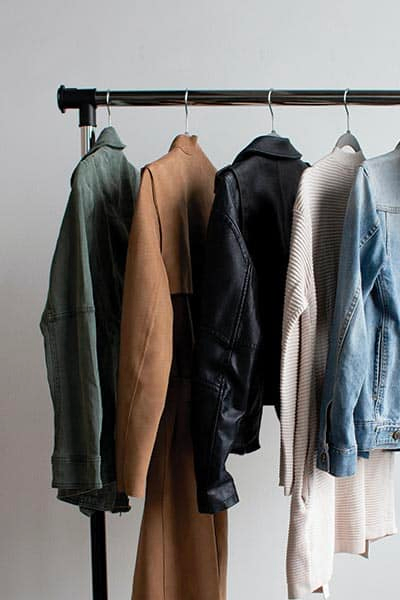

What are some fashion tips for dressing on a budget?
Hey GlamourFolks!
Let's face it – we all want to look stylish, but we don't necessarily want to break the bank doing it. Dressing on a budget can be both fun and challenging, and there are countless ways to maintain your fashion game without emptying your wallet. Here are some of my favorite tips to get us started:
- Set a Budget: It all begins with having a clear budget in mind. Knowing how much you can afford to spend will guide your shopping decisions.
- Thrift and Consignment Stores: Thrift shopping can be a treasure hunt where you can find unique and high-quality pieces at incredibly affordable prices.
- Coupon Codes and Rewards Programs: Take advantage of coupon codes and rewards programs offered by retailers to get those extra discounts.
- DIY and Upcycling: Get creative and breathe new life into old clothing through DIY projects, alterations, or personalization.
- Quality Over Quantity: Investing in a few well-made, versatile items can be more cost-effective in the long run.
Now, it's your turn! Share your best budget-friendly fashion tips, your favorite places to shop on a budget, or any creative ideas you have for maintaining your style without overspending. Let's help each other look fabulous without breaking the bank!
Y.K.

Is it a Keffiyeh, Ghutrah, Shemagh, or Hattah?
In the realm of iconic head coverings, the Middle East unveils a tapestry of cultural garments, each unique in its design, heritage, and regional significance. Among the prominent headpieces that resonate worldwide are the Keffiyeh, Ghutrah, Shemagh, and Hattah, often paired with a distinct accessory known as the Agal. But what differentiates these traditional head coverings?
The Keffiyeh
The Keffiyeh, widely recognized as a symbol of Palestinian heritage, is a square-shaped cloth crafted traditionally from cotton. It showcases a recognizable checkered pattern—often in black and white or red and white. Originating from the Levantine region, this versatile piece served various functions, from shielding against the elements to symbolizing national identity.
The Keffiyeh offers several versatile styles that reflect both functionality and cultural significance:
- Classic Wrap:Fold the square cloth into a triangle, drape it over the head, and secure it in place by tying the ends at the back or letting them hang loose at the front.
- Folded Bandana Style:Fold the Keffiyeh into a narrow band, then wrap it around the head, tying the ends at the back or tucking them under for a snug fit.
The Ghutrah
Originating from the Arabian Peninsula, the Ghutrah mirrors the Keffiyeh in its square-shaped design. Usually fashioned from cotton or lighter fabrics, it predominantly appears in white. Embraced in Saudi Arabia, Kuwait, Qatar, and the UAE, the Ghutrah is often secured in place using the Agal, a black cord-like headdress accessory.
Worn predominantly in the Arabian Peninsula, the Ghutrah allows for various styles, often complemented by the distinctive Agal:
- Standard Drape:Fold the square cloth into a triangle, place it over the head, and secure it in place with the Agal, crossing it over the top and tying it at the back.
- Fishbone Style:Achieved by folding the Ghutrah into multiple layers, creating a distinctive "fishbone" pattern on the forehead, secured with the Agal for a traditional look.
The Shemagh
Favored in Jordan, Iraq, and the Persian Gulf countries, the Shemagh closely resembles the Keffiyeh and Ghutrah in form and function. It presents a larger square cloth, commonly woven in various colors—red, white, black, or combinations thereof. Its primary purpose remains protection against the elements while signifying cultural identity.
The Shemagh, similar in shape and style to the Keffiyeh and Ghutrah, offers versatility in draping and knotting:
- Simple Wrap: Fold the larger square cloth into a triangle, place it over the head, and adjust the ends, tying them at the back or allowing them to hang loosely at the front.
- Neck Scarf Style:Fold the Shemagh into a narrow band and wrap it around the neck, allowing the ends to hang in front or tucking them under for a snug fit.
The Hattah
The Hattah, with its roots entrenched in Yemeni tradition, takes the form of a turban-style headpiece. Crafted from a lengthy cloth intricately wrapped around the head, it usually appears in white. The Hattah often conveys a person's tribal affiliation and societal status.
The Hattah, known for its distinctive turban-like appearance, involves a specific wrapping technique:
- Wrapped Turban:Start with a long cloth, wrap it around the head in layers, and meticulously twist and fold the fabric to create a structured turban, securing it in place.
- Layered Style:Some variations involve layering the cloth in specific patterns to denote tribal affiliation or social status, showcasing intricate folds and designs.
The Agal
Across many Middle Eastern cultures, the Agal—a circular black cord—holds significance as a crucial accessory for securing head coverings like the Ghutrah in place. Serving both functional and symbolic roles, the Agal represents unity and cultural cohesion within these communities.
The Agal, a circular cord, serves as a functional accessory, often seen in conjunction with the Ghutrah:
- Securing the Ghutrah:Place the Ghutrah over the head, ensuring it's spread evenly. Then, position the Agal atop the head and crisscross it, securing it firmly at the back to hold the head covering in place.
- Variations in Positioning:Depending on regional customs, the Agal might be placed differently, with variations in the number of loops or knotting techniques, adding distinctiveness to the overall look.
Top 10 Tips for Embracing Fabulous Fall Fashion
As the leaves change, it's time to refresh our wardrobes with cozy knitwear, earthy tones, and fall essentials. Here are the top 10 tips for fabulous fall fashion:
- Layer Like a Pro: Mix and match layers, like a sweater under a blazer, to stay warm and stylish.
- Play with Textures: Embrace textures like velvet and chunky knits to add visual interest.
- Earthy Tones: Fall is the season for warm colors like olive green and burgundy.
- Cozy Knitwear: Sweaters and turtlenecks add warmth and style.
- Boots: From ankle boots to knee-highs, boots are fall staples.
- Statement Coat: A stylish coat can transform your outfit.
- Accessorize: Scarves and hats add flair and practicality.
- Versatile Denim: Darker washes and denim jackets suit the season.
- Transition Pieces: Lightweight blouses and long sleeves for varying temps.
- Mix Old with New: Extend your summer wardrobe by pairing pieces with fall items.
Let the beauty of the season inspire your style!
Y.K.